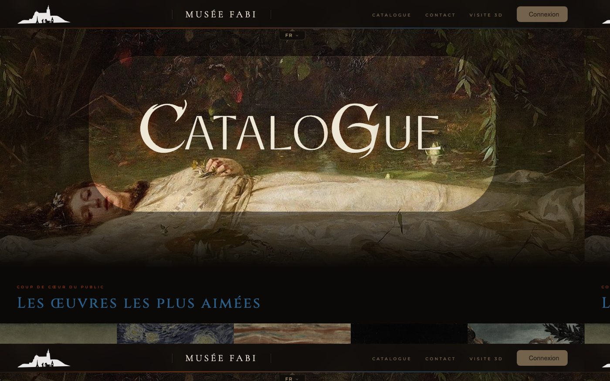
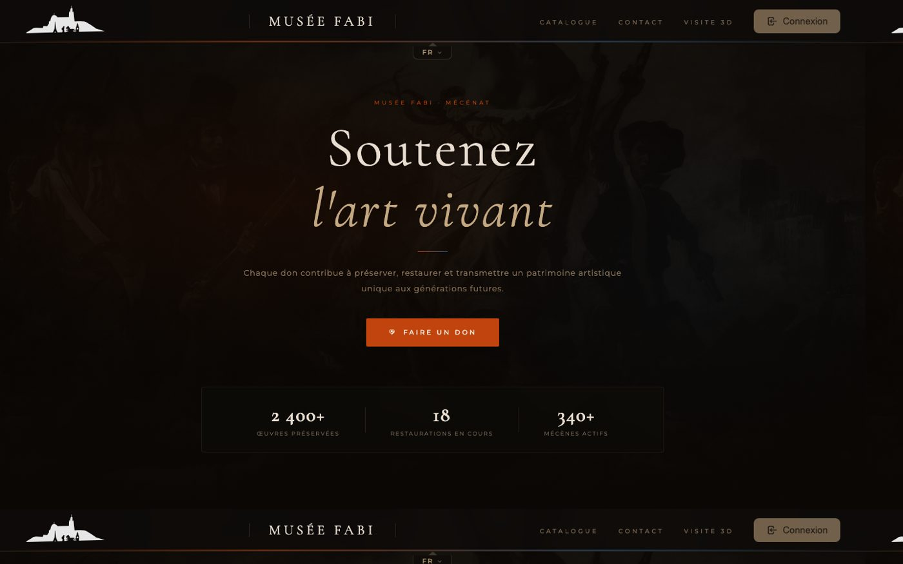
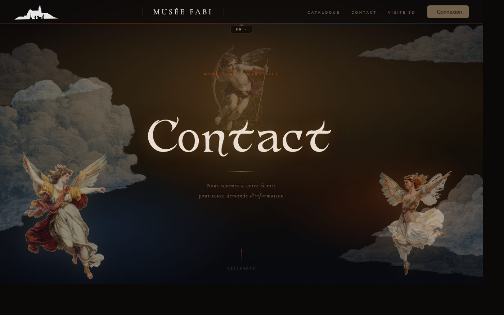

02 / 12
02 / 12Musée FABI
Site dynamique · PHP · MySQL
Site complet d'un musée d'art fictif, le Musée FABI, construit autour de deux chantiers principaux : une visite virtuelle en 3D et une base de données qui alimente tout le site.
La visite 3D, développée avec Three.js, reconstitue le musée salle par salle : navigation libre au clavier (ZQSD/WASD), sprint, et un système de collisions maison qui teste la position du joueur contre les zones de navigation de chaque salle et couloir. Une mini-carte affichée en temps réel situe le visiteur dans le bâtiment, et des étiquettes d'œuvres apparaissent par proximité — nom, auteur, courant artistique — quand on s'approche d'une sculpture ou d'un tableau. Les salles et leurs œuvres se chargent à la volée selon la distance du joueur, pour garder l'expérience fluide.
Derrière l'interface, une base de données MySQL structure tout le contenu : œuvres, catégories, salles, utilisateurs, notes et commentaires. J'ai conçu le schéma, écrit les requêtes via PDO avec des requêtes préparées, et exposé les données au front par une API PHP (catalogue, favoris, notes, session utilisateur). Le catalogue affiché sur le site et les œuvres accrochées dans la visite 3D viennent de cette même source de données.
Autour de ce socle, le site propose aussi un espace client complet (inscription, connexion, sessions PHP, favoris), la réservation de billets par email via PHPMailer, une page de don, une newsletter et une interface multilingue.
C'est mon premier projet full-stack complet : concevoir une base de données, sécuriser une API, gérer l'authentification et la 3D temps réel — tout en soignant une direction artistique sombre et picturale, à l'image d'un musée.


